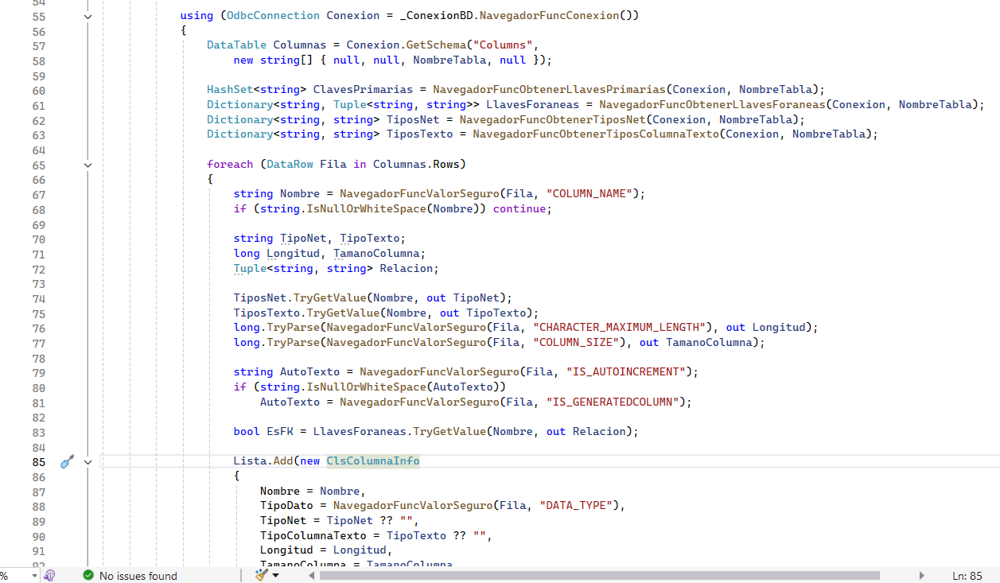

La tabla permite al Navegador construir el mantenimiento. A partir de sus columnas, llaves y tipos de datos se generan la cuadrícula y los campos utilizados para ingresar o modificar información.
¿Cómo recibe la tabla?
La propiedad NombreTabla guarda el nombre enviado por el formulario. Si el valor cambia mientras el componente está activo, el coordinador actualiza la tabla y vuelve a consultar la información.

¿Qué información lee del esquema?
El modelo reconoce la llave primaria, las llaves foráneas, el tipo de dato, si el campo acepta valores vacíos y si es autoincremental. Esta información se almacena en objetos ClsColumnaInfo.

¿Qué verá el usuario?
Cuando se utiliza Consultar o Refrescar, el Navegador llena la cuadrícula con los datos de la tabla. Cada fila representa un registro y puede seleccionarse para modificarlo, eliminarlo o recorrerlo.